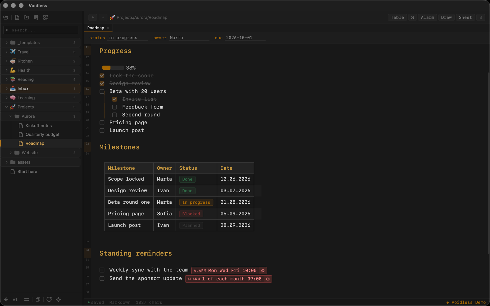

Live preview
Markdown renders inline — no split pane. Move the cursor into markup to see the syntax.

Markdown renders inline — no split pane. Move the cursor into markup to see the syntax.
Variables like {{date}}, {{week}}, auto filename, folder-bound templates.
OAuth2 PKCE, auto-sync on start and every 5 minutes. Works offline.
Write @⏰ 14:30 in a note — get a banner and a chime at the right time.
Notes as a database: table and kanban views over frontmatter, bulk field fill.
Anki trainer and Web Parser built in. Architecture is open for new modules.